Chapitre 9Dépenses courantes et comptabilité
Deux niveaux de saisie cohabitent. La dépense courante est l'écran du quotidien : le marché du matin, un transport, un dépannage. La comptabilité SYSCOHADA est l'écran du Comptable : écritures, journaux, états financiers, immobilisations et clôture annuelle de l'exercice.
ℹ️ Sur le poste Windows La dépense courante et la comptabilité fonctionnent sans réseau sur le poste : les pièces sont passées sur le poste, puis envoyées au serveur à la synchronisation. Là où le poste ne fait pas la même chose que le web, c'est dit dans les encadrés « Sur le poste Windows » de ce chapitre.9.1 Enregistrer une dépense courante
Chemin Menu latéral ➔ Dépense courante ➔ Nouvelle Dépense- Cliquez sur Nouvelle Dépense.
- Saisissez la Date de la transaction.
- Saisissez le Libellé de la dépense — soyez précis : « Marché du matin — légumes » se retrouve, « divers » non.
- Renseignez les Lignes de la dépense : une dépense peut porter plusieurs achats, et chaque ligne a son libellé, sa Catégorie des charges (SYSCOHADA) et son Prix. + Ajouter une ligne en ajoute autant que nécessaire. Une ligne à zéro ne s'enregistre pas : retirez-la ou saisissez son montant.
- Le Montant décaissé (FCFA) ne se saisit pas : c'est le total des lignes, recalculé à chaque frappe, et c'est ce total qui est écrit en comptabilité à l'enregistrement.
- Choisissez le Compte de trésorerie — Caisse, Mobile Money ou Compte bancaire — c'est-à-dire d'où l'argent est sorti.
- Choisissez le Centre de coût de la pièce (par défaut, celui du compte de charge) et la Catégorie de dépenses (famille Marché : oignon, tomate, piment, viande, poisson, igname, riz ; famille Services : transport, électricité / eau, entretien et réparations, communication, blanchisserie).
- Si vous l'avez, joignez le Reçu / facture (photo) : une image de plus de 400 Ko est réduite automatiquement avant l'enregistrement, elle n'est pas refusée pour son poids.
- Cliquez sur Enregistrer la dépense.
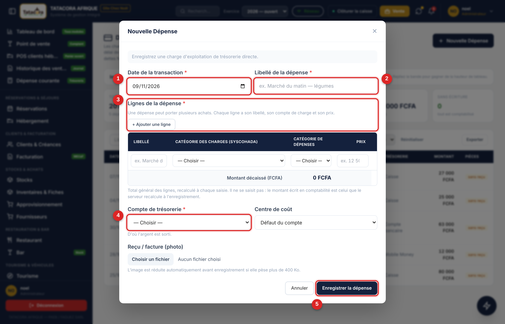
- 1Date de la transaction.
- 2Libellé de la dépense.
- 3Les Lignes de la dépense — un achat par ligne, avec sa catégorie de charges et son prix. Le Montant décaissé en est le total, calculé.
- 4Compte de trésorerie — d'où l'argent est sorti.
- 5Enregistrer la dépense.
Suivre les dépenses
L'écran affiche six indicateurs — total décaissé, dépense moyenne, marché, services, caisse et sans écriture (les dépenses qui n'ont pas encore produit d'écriture comptable) ; la bande se replie pour gagner de la hauteur de tableau. Le tableau donne la date, le libellé, la nature, la charge SYSCOHADA, la trésorerie, le montant et les pièces (reçu ou sans reçu). Filtrez par recherche, par dates (À partir du, Jusqu'au), par compte de trésorerie et par catégorie ; Réinitialiser efface tous les filtres. Export PDF et Export Excel reprennent la liste affichée, filtres compris, avec une colonne indiquant si chaque dépense est comptabilisée. La période proposée par défaut est celle de l'exercice consulté (voir §9.2).
Une dépense marquée non comptabilisée manque au grand livre, à la balance et au compte de résultat. Le bouton Comptabiliser de sa ligne passe la pièce : choisissez le centre de coût de la pièce, puis validez.
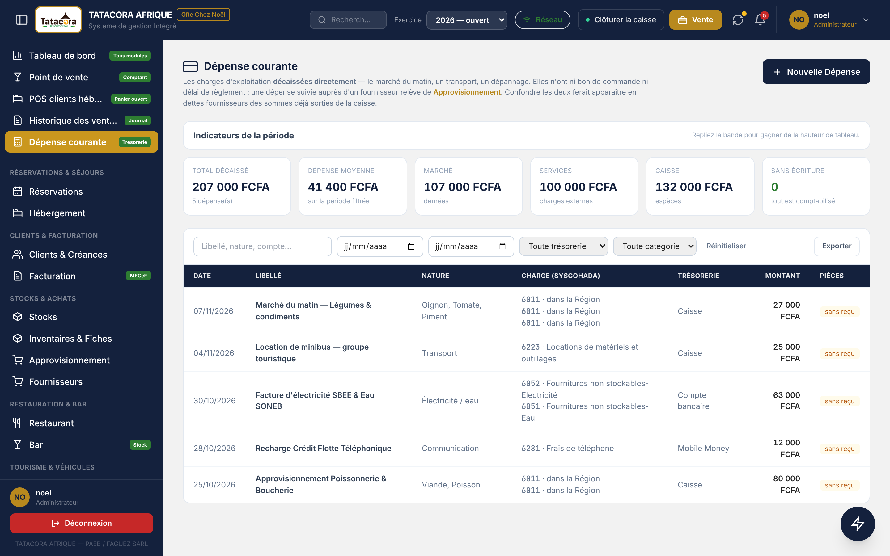
9.2 Le poste de travail comptable
Chemin Menu latéral ➔ ComptabilitéL'écran ouvre sur six indicateurs de l'exercice : chiffre d'affaires (hors TVA), valeur ajoutée, excédent brut d'exploitation, résultat net (avant impôt tant qu'aucun impôt n'est comptabilisé), trésorerie et total du bilan. Dix onglets suivent — Passer écriture, Journal, Grand livre, Balance générale, Compte de résultat, Bilan, Analytique, Immobilisations, Plan comptable et Clôtures — puis onze tuiles d'accès aux écrans de pilotage financier (§9.3). Les filtres portent sur le journal, sur l'inclusion des brouillons et sur les écritures retenues (toutes, brouillons seuls, validées seules).

Le sélecteur d'exercice
La barre supérieure porte, sur les écrans qui consultent une année (comptabilité, tableau de bord, états, dépenses, factures, achats, paie), le sélecteur Exercice : il liste les exercices existants, du plus récent au plus ancien, avec leur statut (ouvert, en clôture, clôturé). Choisissez l'année une fois : les écrans qui suivent le sélecteur la reprennent, et leur en-tête rappelle l'exercice consulté. Quand l'année choisie n'est pas l'exercice ouvert le plus récent, une pastille (« Vous consultez 2025 (clôturé) », ambrée pour un exercice en clôture) et le lien Revenir à 2026 vous évitent de rester sur la mauvaise année sans le savoir. Dans la comptabilité, des boutons de navigation passent de l'exercice N à N−1 ou N+1.
⚠️ Attention Choisir un exercice ne déplace aucune écriture. Une vente, une dépense ou une écriture s'enregistre toujours dans l'exercice de sa date, quelle que soit l'année consultée. Dans les écrans de saisie des modules, la date proposée reste celle du jour ; seule la saisie d'une écriture à la main propose, si le jour n'est pas dans l'exercice consulté, le 31 décembre de cet exercice.Un bandeau de statut rappelle l'état de l'exercice consulté : en clôture (les ventes, les dépenses et les autres modules n'y écrivent plus ; seul le comptable y passe encore ses écritures d'inventaire), ou clôturé (lecture seule ; seule la réouverture par le comptable permet de corriger). L'exercice suivant s'ouvre tout seul : le serveur ouvre l'année en cours chaque nuit et, en décembre, l'année suivante, et la première pièce datée du 1er janvier ouvre l'année si elle manque.
Passer une écriture
- Cliquez sur Nouvelle écriture (onglet Passer écriture).
- Choisissez le Journal : journal des ventes (VTE), des achats (ACH), de banque (BQ), de caisse (CAI) ou des opérations diverses (OD). Les journaux de clôture (CL) et d'à-nouveaux (AN) ne se choisissent pas : seule la clôture les écrit.
- Saisissez la Date et le Libellé de la pièce.
- Sur chaque ligne : le compte, le libellé de la ligne, le centre analytique, puis le montant au débit ou au crédit (pas les deux sur la même ligne).
- Cliquez sur + Ajouter une ligne autant de fois que nécessaire. Les totaux se cumulent en bas du tableau, avec la mention « Pièce équilibrée » ou l'écart restant.
- Terminez par Enregistrer en brouillon ou par Enregistrer et valider.
Quatre contrôles s'appliquent à l'enregistrement :
- débit = crédit — une pièce déséquilibrée n'est jamais enregistrée ;
- la date doit tomber dans un exercice ouvert ou en clôture, jamais dans un exercice clôturé ;
- le compte doit exister au plan comptable ;
- le centre analytique est obligatoire sur les classes 6, 7 et 8.
Les comptes du plan et leur correspondance
L'onglet Plan comptable liste les comptes SYSCOHADA révisé par classe, avec une recherche par numéro ou libellé. + Créer un compte ajoute un compte (Numéro, Intitulé, Type : Actif, Passif, Charge ou Produit). Choisissez le type avec soin : il commande le poste du bilan, et un type faux rend le compte invisible au bilan.
Le bouton Correspondance des comptes ouvre l'écran qui dit, pour chaque pièce automatique, quel compte chaque rôle utilise : produits du restaurant, du bar, de la location, des circuits ; TVA facturée et récupérable ; Caisse, Banque, Mobile Money ; Clients, Fournisseurs, avances clients ; comptes du résultat de l'exercice (131 et 139 par défaut). Modifier remplace le compte d'un rôle (le compte doit exister au plan et convenir au rôle) ; Rétablir le défaut remet le compte d'origine. Un changement vaut pour les pièces futures : une pièce déjà passée n'est jamais réécrite. La modification est réservée aux profils qui ont le droit d'écriture sur la comptabilité, et existe aussi sur le poste.
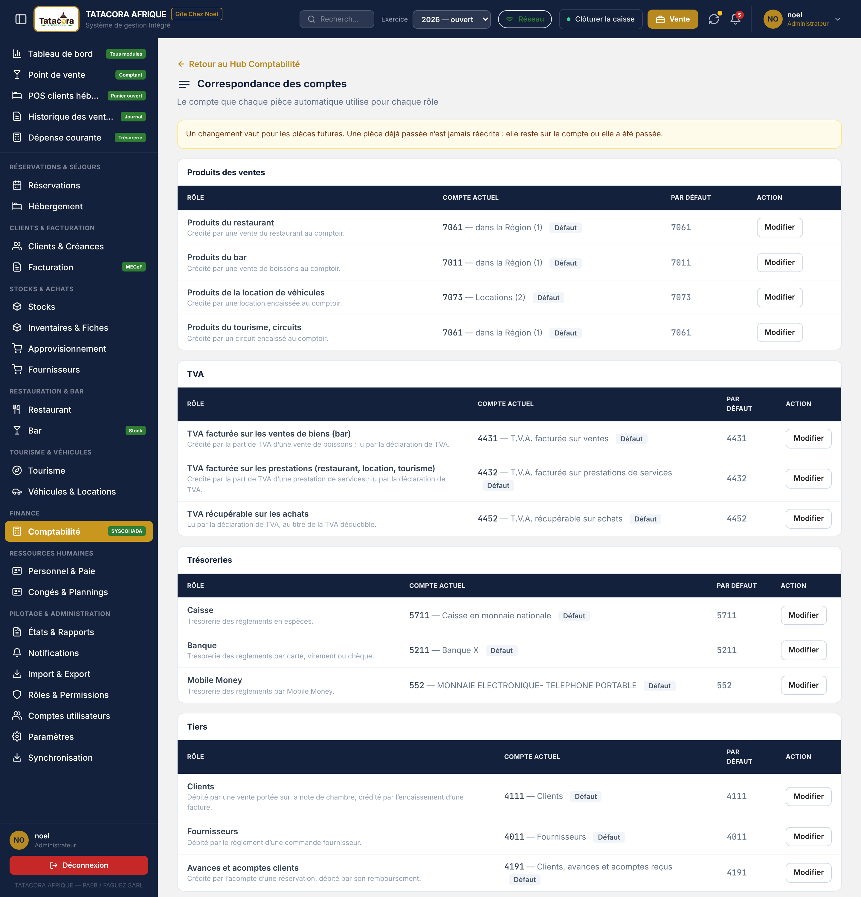
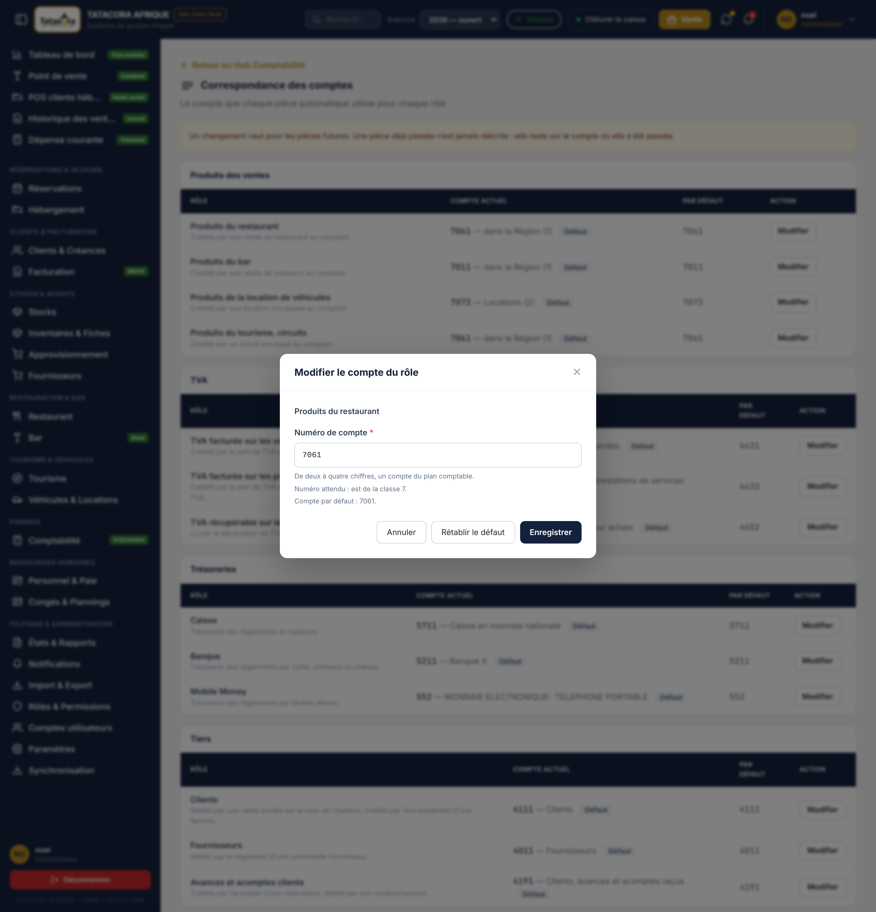
Les immobilisations
L'onglet Immobilisations présente le tableau de l'exercice (code, immobilisation, durée, valeur d'origine, dotation, amortissements cumulés, valeur nette comptable). + Immobilisation ouvre la fiche : Compte d'immobilisation, Valeur d'origine (FCFA), Mise en service et Durée d'utilité (années). Aucune durée n'est proposée : c'est une estimation propre à l'entreprise, pas un barème, donc elle est obligatoire et sans valeur pré-remplie. L'amortissement est linéaire, avec prorata de la première annuité en mois entamés ; Plan affiche le plan d'amortissement année par année (la dernière annuité absorbe l'arrondi, pour que la valeur nette finale tombe à zéro).
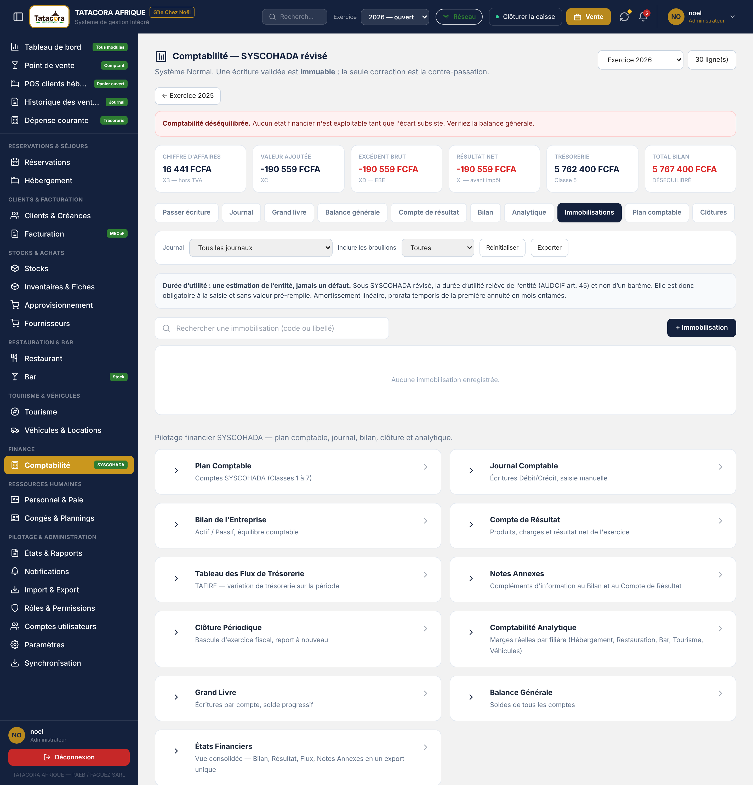
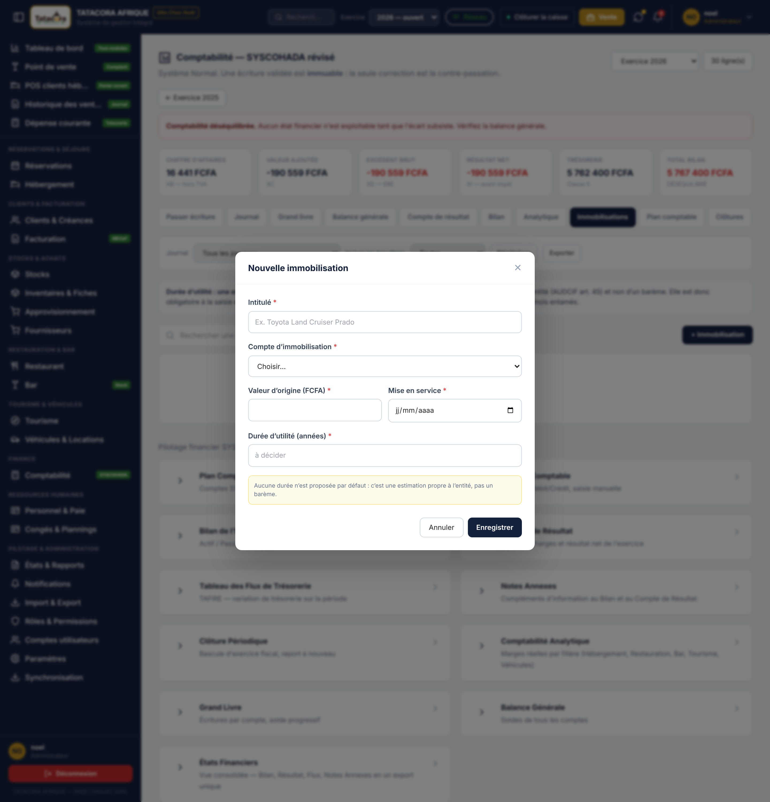
9.3 Les écrans comptables
Les onze tuiles de la page d'accueil ouvrent, pour chacune, un écran de consultation :
| Écran | Ce qu'il donne |
|---|---|
| Plan Comptable | Les comptes SYSCOHADA révisé, filtrables par classe, avec leur nature (actif, passif, charge, produit). |
| Journal Comptable | Toutes les écritures, dans l'ordre chronologique, filtrables par journal. Seul écran comptable qui s'exporte (Excel ou PDF). |
| Grand Livre | Les écritures d'un compte choisi, avec leur solde progressif, puis le solde d'ouverture (l'à-nouveau) et le solde de clôture. Une ouverture « provisoire » est calculée à chaque lecture tant que l'exercice précédent n'est pas clôturé ; elle est dite « inconnue », jamais zéro, quand aucun report n'existe. |
| Balance Générale | Les soldes de tous les comptes mouvementés. Le bandeau confirme l'équilibre : Total Débit = Total Crédit. Quand l'exercice précédent n'est pas encore clôturé, un encadré signale que la balance comprend ses à-nouveaux provisoires. |
| Compte de Résultat | Produits, charges, résultat d'exploitation, financier, HAO, puis le résultat. Une colonne Exercice N−1 permet la comparaison quand l'exercice précédent existe. |
| Bilan de l'Entreprise | Actif et passif en présentation brut / amortissements / net, avec contrôle d'équilibre et la même colonne de comparaison N−1. |
| Tableau des Flux de Trésorerie | Le TAFIRE : ressources, emplois, variation du besoin en fonds de roulement, variation de trésorerie, et le contrôle de cohérence entre variation calculée et variation réelle. |
| Notes Annexes | Les sept notes : règles et méthodes, immobilisations, amortissements, créances et dettes, stocks, effectif, événements postérieurs. |
| États Financiers | La vue consolidée des quatre documents (bilan, résultat, flux, notes annexes), en consultation. |
| Comptabilité Analytique | La marge par centre : Hébergement, Restaurant, Bar, Tourisme, Véhicules, RH, Structure. |
| Clôture Périodique | La liste de contrôle de la clôture (§9.4) — un tableau d'état, sans bouton d'action. |
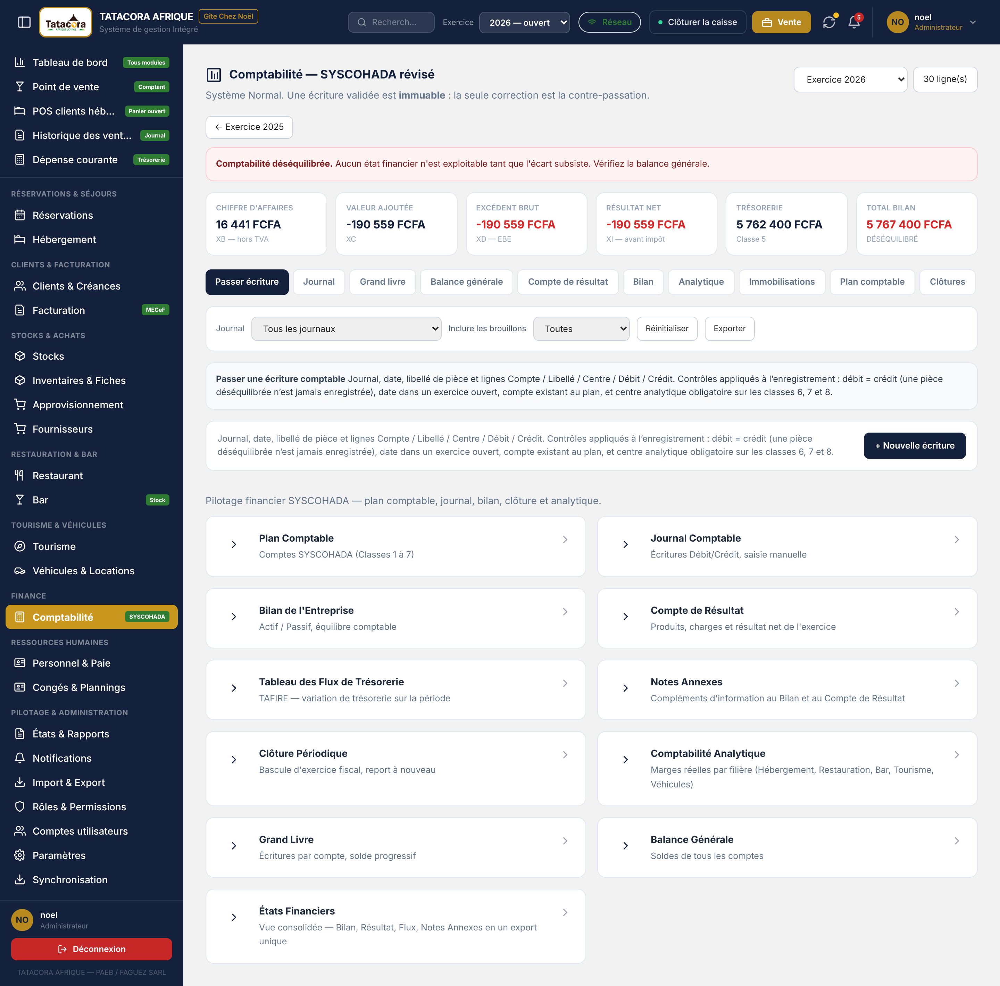
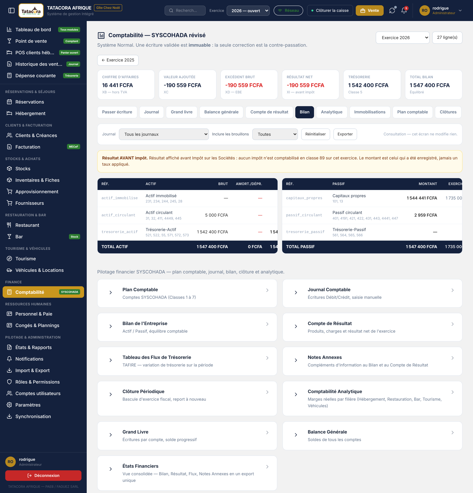
9.4 La clôture de l'exercice
La clôture est annuelle. Ses gestes se font dans l'onglet Clôtures de la comptabilité ; l'écran Clôture Périodique n'en est que la liste de contrôle. Avant de commencer, l'onglet liste les postes dont l'envoi n'est peut-être pas terminé (opérations à envoyer, ou état inconnu) : faites d'abord « Synchroniser les postes », car une fois l'exercice en clôture, le serveur refuse leurs pièces datées de cette année. C'est un avertissement, il ne bloque pas.
| Étape | Bouton | Effet |
|---|---|---|
| ouvert ➔ en clôture | Démarrer la clôture | Les modules n'écrivent plus dans l'exercice ; leurs pièces vont dans l'exercice suivant. Seules les écritures d'inventaire du comptable y passent encore. |
| en clôture ➔ ouvert | Reprendre la saisie | Retour en arrière, tant que rien n'est clôturé. |
| en clôture ➔ clôturé | Clôturer définitivement | Voir ci-dessous. |
| clôturé ➔ en clôture | Rouvrir (le comptable seul, avec un motif d'au moins dix caractères) | Les pièces de clôture et d'à-nouveaux sont contre-passées — rien ne s'efface — et le motif est tracé. |
La clôture définitive est refusée tant que la liste de contrôle n'est pas réunie : aucune écriture en brouillon, balance équilibrée, exercice précédent clôturé. Quand elle passe, elle produit dans l'ordre :
- La pièce de clôture, datée du 31 décembre au journal CL : elle solde les comptes de gestion (classes 6, 7 et 8) ; la contrepartie va en 131 (bénéfice) ou en 139 (perte).
- La pièce d'à-nouveaux, datée du 1er janvier suivant au journal AN : elle reporte les soldes des comptes de bilan, résultat compris. Les à-nouveaux, provisoires tant que l'exercice n'est pas clôturé, deviennent définitifs.
- Le verrou : l'exercice passe au statut « clôturé ».
- L'archive légale : le fichier des écritures, la balance, les états de clôture en PDF, et un manifeste. Son empreinte SHA-256 est affichée dans l'onglet ; notez-la sur le registre ou le procès-verbal de clôture : elle prouvera plus tard qu'aucun fichier n'a changé. Télécharger l'archive (ZIP) vérifie l'archive avant de la délivrer et refuse si un fichier a été modifié. Si la génération échoue après la clôture, la clôture tient et Générer l'archive est proposé.
La colonne Résultat reporté de l'onglet donne, pour chaque exercice clôturé, le résultat que sa clôture a écrit en 131 ou 139. Les états de l'exercice clôturé (balance, compte de résultat, bilan) restent ceux d'avant la clôture : le compte de résultat montre le résultat de l'année, pas zéro.
🛑 Alerte Conservez l'archive de clôture hors du serveur. Elle est rangée sur le serveur, à côté de la base, mais la sauvegarde de la base ne la contient pas : copiez-la, avec son empreinte, sur un support externe. Le format exact attendu par l'administration fiscale pour le fichier des écritures reste à confirmer avec l'expert-comptable. ℹ️ Sur le poste Windows Le poste mène aussi la clôture (mêmes quatre gestes, mêmes contrôles, mêmes pièces CL et AN, même archive et même empreinte) sur les écritures passées par ce poste. Mais le serveur reste le seul comptable : chaque geste envoie une demande au serveur, qui rejoue ses propres règles. Si le serveur refuse (un brouillon sur un autre poste, un exercice précédent non clôturé de son côté…), la clôture locale demeure et la raison se lit dans « À traiter ». La clôture légale de l'établissement est donc celle du serveur : faites-la sur le web.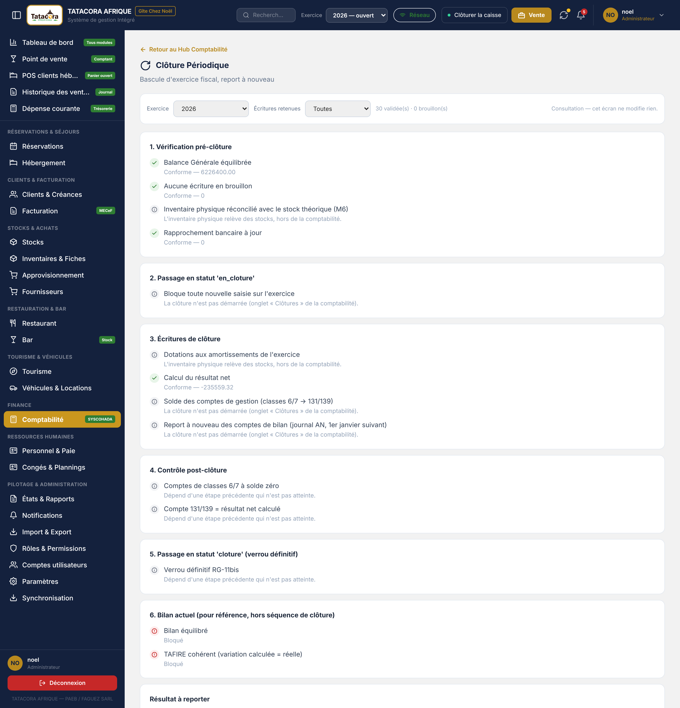
L'écran Clôture Périodique déroule six groupes de contrôles — vérification pré-clôture (balance équilibrée, aucun brouillon, inventaire physique réconcilié, rapprochement bancaire), passage « en clôture », écritures de clôture, contrôle post-clôture, passage « clôturé », bilan de référence — et marque chaque ligne Conforme, Bloqué, Non vérifiable (limite du domaine : l'inventaire physique appartient aux stocks) ou Non atteint (dépend d'une étape précédente). Non vérifiable et Non atteint ne sont pas des échecs. Cet écran ne déclenche rien : les boutons sont dans l'onglet Clôtures.
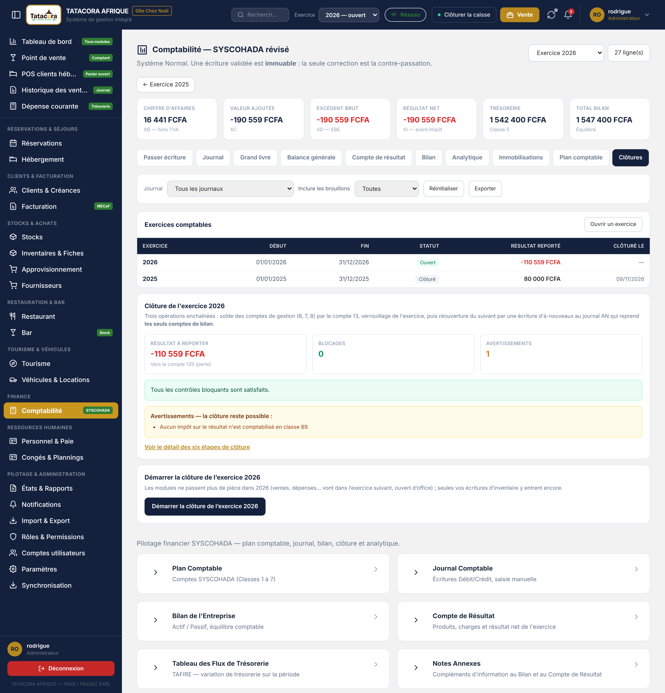
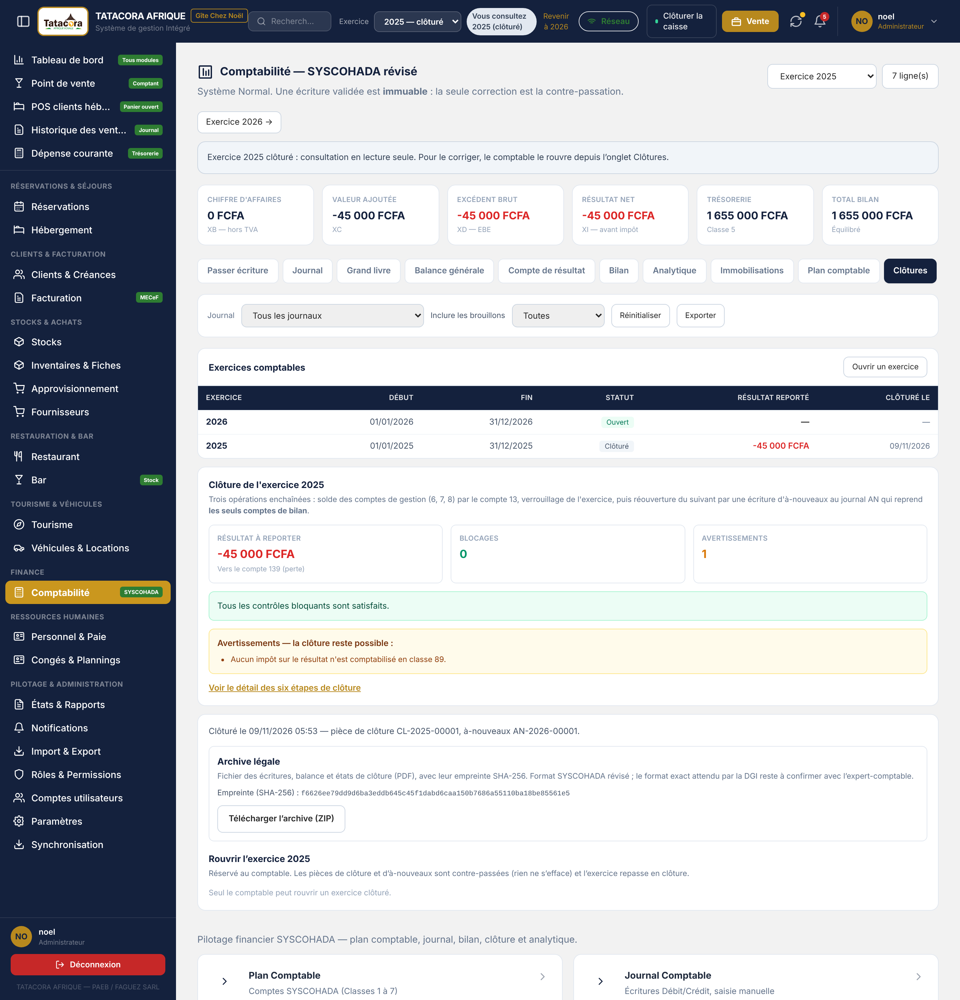